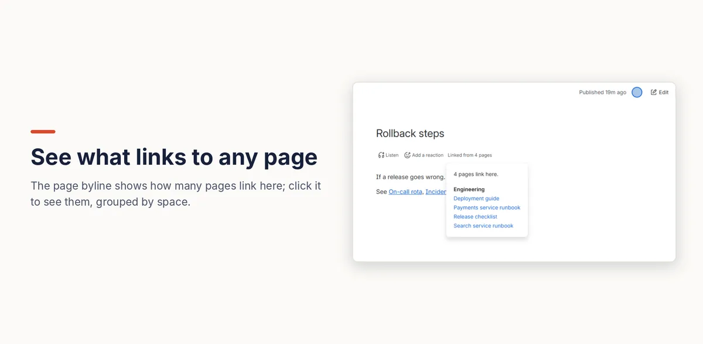

How to see which pages link to a Confluence page
Confluence shows how many pages link to a page in the page's Details panel, and lists them on its Page Information screen, one page at a time. Readers don't see it unless they open the panel, and there's no report across pages, which people have asked Atlassian for since 2014. To see “Linked from 12 pages” under every page title, use an app that keeps an index of your links.
With Confluence on its own
- Open the page and select the Details icon (ⓘ) on the right edge of the page.
- Under Connections, Incoming links shows how many pages link here. If nothing links to the page, the Incoming links row doesn’t appear at all.
- Select the number to open the Incoming Links list, grouped by space.
Where it falls short
- One page at a time, in a panel most readers never open, so nothing on the page tells them other pages depend on it.
- No report. You can't list incoming links for a space, or find the pages nothing links to (see orphan pages). The request for this, CONFCLOUD-35218, has over 600 votes and is still “Gathering interest”.
On every page with Link Health & Cleanup
- A Confluence admin installs Link Health & Cleanup. It builds an index of every link on the site.
- Every page now shows Linked from 12 pages (or No incoming links) under its title. Select it to see those pages, grouped by space.
- To show the same list on the page itself, edit it, type
/and add the Incoming links macro.
The count only includes pages the viewer is allowed to open, so two people can see different numbers. It updates within a few minutes of a link being added or removed.

Disclosure: Kitefold makes Link Health & Cleanup, so we're not neutral. The built-in options above are free and may be all you need.
Related guides
- How to find orphan pages in Confluence
- How to find broken links in Confluence Cloud
- How to find unused attachments in Confluence (and free up storage)
Checked against Confluence Cloud in November 2026. Confluence changes often; if something here no longer matches what you see, email support@kitefold.app and we'll update it.